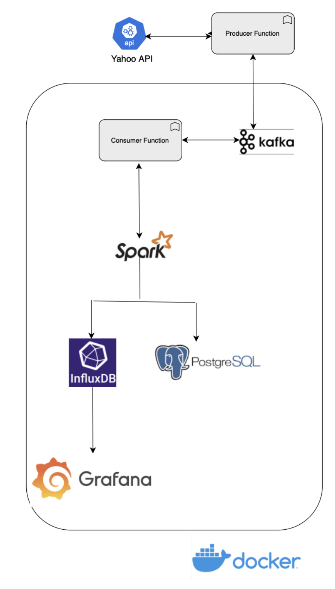
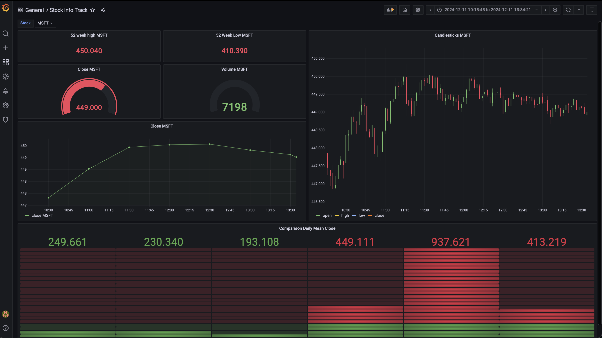

Distributed Streaming
Apache Kafka with multi-partition topics, consumer groups, and backpressure control for burst traffic.
Distributed event streaming platform that processes thousands of stock events per second. Kafka · Spark · InfluxDB · Grafana. Production-ready.
Apache Kafka with multi-partition topics, consumer groups, and backpressure control for burst traffic.
PostgreSQL for metadata with optimized indexes. InfluxDB for time-series price data and fast aggregations.
Price drops, spikes, high volume, and volatility alerts. Configurable thresholds and severity levels.
Grafana dashboards for real-time monitoring, candlestick charts, and trend analysis.

End-to-end pipeline: Yahoo Finance API → Kafka → Spark Streaming → InfluxDB & PostgreSQL → Grafana dashboards. Fully containerized with Docker.

Real-time stock tracking with candlesticks, gauges, and comparative metrics.
docker-compose up -dStart Kafka, Spark, InfluxDB, PostgreSQL, Grafana
pip install -r requirements.txtInstall Python dependencies
cd producer && python producer.pyRun the stock data producer
Clone the repository and run with Docker in minutes.
View on GitHub